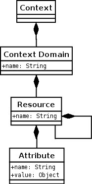
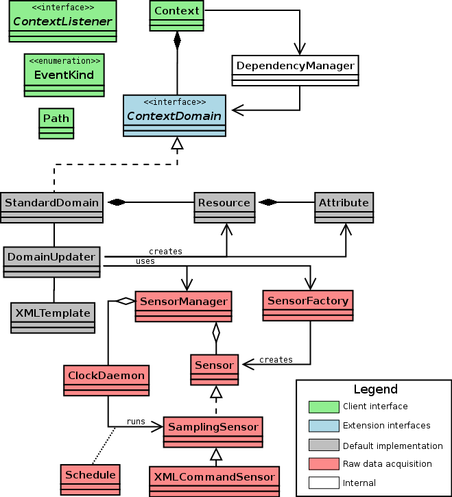

WildCAT is a Java toolkit/framework which can be used to build context-aware applications, of which self-adaptive applications are a special case. From the client applications point of view, it provides a simple and dynamic data-model to represent the execution context of the application, and offers a simple API for the programmers to access this information both synchronously and synchronously (pull and push). Internally, it is a framework designed to facilitate the acquisition and aggregation of contextual data and to create reusable ontologies to represent aspects of the execution context relevant to many applications. It is described in more details (but in french), in Chapter 5 of P.-C. David's PhD Thesis

The figure on the right represents the logical model use by WildCAT to
represent the execution context. Note that this UML diagram does not imply
anything about the actual implementation, except for the
Context class, which serves as a façade for the whole system
from the clients' point of view.
The main class is called Context. It is a singleton; only
one instance exists in each application, representing the whole context of
the application. It provides the interfaces used by clients (see next
section).
The context is made of several domains, each represented by a
ContextDomain object and identified by a unique name. The
purpose of context domains is to separate the different aspects of
the execution context, and to allow each of these to use a custom
implementation, be it for performance reason or for interoperability with
existing systems. Examples of context domains include (but are not limited
to):
sys: local hardware resources (memory, disks, IO
devices...).net: the topology and performance of the
network.soft: software resources available (shared libraries,
programs, resource files...).file: the local filesystem.geo: geophysical informations (logical and physical
location, room temperature...).user: user preferences, characteristics (disabilities...)
and current state (activity, mood...).Note that WildCAT does not actually implement any of those, but provides a framework in which these heterogeneous informations can be integrated and accessed through a common interface. Because lots of context information is common to many applications, WildCAT is designed so that context domains modelisation (ontologies) and implementation (data acquisition) can be shared and reused like software libraries.
Finally, each context domain is model as a tree of named resources, each being described by attributes (simple key, value pairs). This simple model was chosen because of its generality, familiarity and because it does not impose a complex implementation. Note that this is a logical model, as seen by clients. An actual implementation of a context domain can use a more complex model internally (for example with sharing of resources, resulting in a DAG), as long as it provides a tree-like interface.
Of course, since the context being modeled is highly dynamic, so is WildCAT's data model. Each change occuring in the context model is represented by an event. The possible kinds of events are:
RESOURCE_ADDED and RESOURCE_REMOVED, fired when resources appear or
disappear in the context.ATTRIBUTE_ADDED and ATTRIBUTE_REMOVED, fired when attributes appear or
disappear in a resource.ATTRIBUTE_CHANGED, fired when the value
of an attribute changes.EXPRESSION_CHANGED, fired when the value
of a synthetic expression on the context changes (see below).CONDITION_OCCURED, fired when a boolean
synthetic expression becomes true, as a special case of EXPRESSION_CHANGED (see below).WildCAT uses a syntax inspired by URIs to denote an element in the context while being indenpendent on the actual implementation. A path can denote either a resource, an attribute, or all the sub-resources or sub-attributes of a resource.
sys://storage/memory // A specific resource sys://storage/disks/hda#removable // A specific attribute sys://devices/input/* // All the (direct) sub-resources of input sys://devices/input/mouse#* // All the attributes of mouse
Note that a path can be syntactically valid but denote a place which does not exist.
Paths are represented by instances of the Path class, which
can be created this way:
Path p = new Path("sys://storage/disks/hda#removable");
The Context class offers two complementary interfaces to
access the actual contextual data of an application.
The first one allow clients to discover the structure of the context and
to request the immediate value of an attribute. The methods in
Context corresponding to this interface are:
public class Context { // Discovery and synchronous requests public String[] getDomains() { ... } public Path[] getChildren(Path res) { ... } public Path[] getAttributes(Path res) { ... } public boolean exists(Path path) { ... } public Object resolve(Path attr) { ... } ... }
The get* methods can be used to discover the current
structure of the context, as known by WildCAT. exists() tests
whether the element(s) denoted by its argument path actually exist at this
time in the context. Finally, resolve() returns the value of
the single attribute denoted by its argument. For example,
Path[] drives = context.getChildren(new Path("sys://storage/disks"));
returns the list of all disk drives currently known to WildCAT, while
Number n = (Number) context.resolve(new Path("sys://storage/memory#free"));
returns the amount of memory currently available.
The second interface provided by Context follow the
publish/subscribe pattern. The client first registers its interest in a kind
of event, and from this point on, WildCAT will send it asynchronous
notifications each time this kind of event occurs. The methods in
Code corresponding to this interface are:
public class Context { ... // Asynchronous notifications (publish / subscribe) public long register(ContextListener listener, int eventKinds, Path path) { ... } public long registerExpression(ContextListener listener, int eventKinds, String expr) { ... } public void unregister(long regId) { ... } }
The first method, register() takes a listener object (which
will receive the event notifications), a bitmask representing the kinds of
events the client is interested in (using constants defined in the
EventKinds interface), and finally the path on which the events
must be detected (this path can include a wildcard as its last element). For
exemple, to get notified each time a new input device is plugged or
unplugged:
context.register(myListener, EventKinds.RESOURCE_ADDED | EventKinds.RESOURCE_REMOVED,
new Path("sys://devices/input/*"));
Where myListener implements the ContextListener interface:
public interface ContextListener {
void attributeAdded(Path attr, long timeStamp);
void attributeRemoved(Path attr, long timeStamp);
void attributeChanged(Path attr, Object oldValue, Object newValue, long timeStamp);
void resourceAdded(Path res, long timeStamp);
void resourceRemoved(Path res, long timeStamp);
void expressionValueChanged(long regId, Object oldValue, Object newValue, long timeStamp);
void conditionOccured(long regId, long timeStamp);
}
the most convenient way being to subclass
ContextListenerAdapter and override only the required methods:
class InputDevicesListener extends ContextListenerAdapter { public void resourceAdded(Path res, long timeStamp) { System.out.println("New input device: " + res); } public void resourceremoved(Path res, long timeStamp) { System.out.println("Input device unplugged: " + res); } }
The next method, registerExpression(), is used only in
combination with the EXPRESSION_CHANGED and
CONDITION_OCCURED event kinds (and the
corresponding methods in ContextListener). This allows clients
to register to more complex events. For example, if a client only wants to
be notified when the room temperature goes beyond 30°C, it can use the
following code:
context.registerExpression(aListener, EventKinds.CONDITION_OCCURED,
"geo://location/room#temperature > 30");
instead of using a simpler ATTRIBUTE_CHANGED event kind, and being notified a
many non-intersting events.
An EXPRESSION_CHANGED event occurs each
time the value of the monitored expression changes. If the expression
depends on multiple paths, WildCAT will automatically recompute its value
each time one of these paths changes. CONDITION_OCCURED can be seen as a special case of
EXPRESSION_CHANGED for boolean expressions
where only the transation from false to true are
considered.
The expressions usable with registerExpression() can use
paths, constant numbers and strings, comparison operators (=,
!=, <, >, <=,
>=), arithmetic operations (+, -,
*, /, with the usual precedence rules), boolean
operators (not, and, or), and finally
function invocation (function(arg1, arg2...)). WildCAT provides
some predefined functions working on numbers and strings, but new functions
can be added easily to extend the vocabulary of synthetic expression (this
feature is probably the best way to extend the power of WildCAT without
changing its external interface).
Both register() and registerExpression() return
a numeric identifier corresponding to this particular subscription. This
number should be kept by the client, as it must be provided to
unregister() in order to disable an event subscription.
The following UML diagram represents the internal structure of WildCAT.

The framework can be decomposed in several different parts:
The ContextDomain interface is the main extension
point of WildCAT as a framework. New implementations of the notion of
context domain can be provided if the default one is not suitable
to a particular domain, for example for performance reasons or to create
a bridge with an existing system.
public interface ContextDomain {
void initialize(Context ctx);
String getName();
boolean exists(Path path);
Object resolve(Path attr);
Path[] getAttributes(Path res);
Path[] getChildren(Path res);
void register(ContextListener listener, int eventKinds, Path path);
void unregister(ContextListener listener, int eventKinds, Path path);
void update(Path path, Path cause);
}
ContextDomain in the StandardDomain class. This
implementation follows directly the logical model, with classes for
Resources and Attributes. The creation of the
initial structure of the domain and its updating is managed by the
DomainUpdater, which creates and removes resources and
attributes according to the specification provided by an
XMLTemplate (see below). Finally, the raw, unstructured data
acquisition is delegated to the last part of the WildCAT framework.This sub-framework is centered around the notion of
sensor, which represent the Java objects responsible for the
acquisition of raw data. The actual methods used to get the data can be
very varied, requiring communication with OS layers or even directly with
hardware; WildCAT does not offer any direct help here. However, WildCAT
provides the SensorManager class to organize all the sensors.
Each sensor is identified by a name, and can be either started or
stopped. When it is started, a sensor will send new samples to
the SensorManager asynchronously to the sensor manager, which
gathers all the samples it receives from every sensor and make them
available to its clients.
WildCAT distinguishes two kinds of sensors. Active sensors
implement directly the Sensor interface and run in their own
thread. They are responsible to send new samples to the sensor manager
when it is appropriate.
public interface Sensor {
String getName();
void setListener(SamplesListener listener);
void start();
void stop();
boolean isStarted();
}
Passive sensors are created by associating a
Sampler and a Schedule to create a
SamplingSensor. The sensor manager then uses a daemon to
invoke the sampler regularly according to its scheduling policy. Samplers
are very easy to implement, requiring ony one method to be
implemented:
public interface Sampler {
SampleSet sample();
}
When invoked, this sample() method should return the raw
data corresponding to the current state of the part of the context it is
responsible to observe.
In order to make it easier to integrate WildCAT with existing systems,
WildCAT provides the XMLCommandSensor class. This class
implements the Sampler interface by invoking an external
program (using Runtime.getRuntime().exec()). The output of
the command should be a valid XML document representing a
SampleSet object, which is then parsed an returned by the
XMLCommandSensor. As an example, here is a simple Ruby
program which can be used by XMLCommandSensor:
require 'wildcat' class KernelVersionSensor < Sampler def sample uname = IO.read('/proc/version').chomp version = uname.scanf('Linux version %d.%d.%d'); return { 'uname' => uname, 'major-version' => version[0], 'minor-version' => version[1], 'patch-level' => version[2], 'version' => version.join('.') } end end print KernelVersionSensor.new.sense
The output of this program looks like this:
<?xml version="1.0"?>
<sample-set timestamp="2005-07-19T09:15:36">
<sample name="uname" type="string">Linux version 2.6.10-5-k7 ...</sample>
<sample name="patch-level" type="integer">10</sample>
<sample name="minor-version" type="integer">6</sample>
<sample name="version" type="string">2.6.10</sample>
<sample name="major-version" type="integer">2</sample>
</sample-set>
and can be understood by XMLCommandSensor.
Finally, the SensorFactory class helps creating new sensors
directly from XML specifications in the format used by the default context
domain implementation (see below).
The default implementation of ContextDomain is generic and
can be configured through an XML file. The structure of this file can be
seen as a template for the structure of the context domain being modeled.
Here is a commented example of such a file.
<?xml version='1.0' encoding='ISO-8859-15'?>
<context-domain name="sys">
<resource name="load">
<sensor name="load" class="org.obasco.wildcat.sensors.LoadSensor">
<schedule><periodic period="10000"/></schedule>
</sensor>
</resource>
The main XML element is context-domain and indicates the
name of the domain being defined. Inside this element we find a
resource element, also with a name. The resource is associated
with a sensor defined using the name of the Java class implementing it, and
an embedded scheduling specific. In this case, the load passive
sensor will sampled every 10 seconds by WildCAT to get updated load values.
The samples returned by the sensor are automatically mapped as dynamic
attributes of the load resource.
<resource name="storage">
<resource name="disks">
<sensor name="hda" class="org.obasco.wildcat.sensors.HardDriveSensor">
<schedule><on-create/></schedule>
<configuration>
<device>/dev/hda</device>
<mode>static</mode>
</configuration>
</sensor>
</resource>
</resource>
The next part of the file defines abstract resources named
storage and disks to serve as categories and
organize other sub-resources. The specification of resource
hda, representing the first hard drive in the host system,
shows how to pass configuration information to sensor classes. Such a
mechanism is required because a given context can have many resources of the
same kind (for example hard drives), and each must be observed by a
particular instance of the sensor class. The configuration XML
element, if present inside a sensor specification, is passed to the
constructor of the sensor class (here HardDriveSensor) to
configure this particular instance. The actual value passed to the
constructor is a parsed XML element (currently using the JDOM API), and the only constraint is that it is
a well-formed XML fragment. Every configurable sensor class can define its
own "configuration file" format and is responsible for its interpretation.
In the example, the configuration fragment tells the
HardDriveSensor object to observe the device named
/dev/hda and to consider it a static device (i.e.
non-removable).
<resource name="network">
<attribute name="nb_interfaces">count(*)</attributes>
<resource name="eth0">
<sensor name="nic" class="org.obasco.wildcat.sensors.NICSensor">
<schedule><periodic period="1000"/></schedule>
<configuration><device>eth0</device</configuration>
</sensor>
<attribute name="error_rate">#dropped_packets / #received_packets</attribute>
</resource>
</resource>
</context-domain>
The last part of the file deals with the network card. It uses
attribute elements to define synthetic attributes (as
opposed to the primitive ones corresponding to raw data coming from
sensors). The value of these attributes is defined by a expression (using
the same simple language as the one used with the
registerExpression() method) which can reference any part of
the context, including elements of other domains. WildCAT tracks the
dependencies between these synthetic attributes (using the
DependencyManager internal class in the architecture diagram)
and updates their values automatically. From the point of view of the client
programs, these attributes are not different from the others.
The current implementation of WildCAT does not support the definition of dynamic context domains using the default implementation, although such a feature is planned. See Chapter 5 of P.-C. David's PhD Thesis, Section 5.5.4, page 89, for a description of the expected design.
Although it us usable independently, WildCAT was developed as a part of a bigger system named SAFRAN (Self-Adaptive FRActal compoNents). The following publications describe SAFRAN as a whole, including WildCAT.
Une approche par aspects pour le développement de
composants Fractal adaptatifs (An aspect-oriented approach to
the development of self-adaptive Fractal components)
P.-C. David
and Thomas Ledoux, in 2ème Journée Francophone sur le Développement de
Logiciels Par Aspects (JFDLPA
2005), Lille, France, september 2005, to appear. BibTeX.
Les développeurs d'application sont aujourd'hui confrontés à des contextes d'exécution de plus en plus variables, qui nécessitent la création d'applications capables de s'adapter de façon autonome aux évolutions de ces contextes. Dans cet article, nous montrons qu'une approche par aspects permet de construire des applications adaptatives dans lesquelles le code d'adaptation est modularisé aussi bien sur le plan spatial que temporel. Concrètement, nous proposons SAFRAN, une extension du modèle de composants Fractal permettant le développement de l'aspect d'adaptation sous la forme de politiques réactives. Celles-ci détectent les évolutions du contexte d'exécution et adaptent le programme de base en le reconfigurant. SAFRAN permet ainsi de développer l'aspect d'adaptation de façon modulaire et de le tisser dynamiquement dans les applications.
Today application developers have to deal with an increasingly variable execution context, requiring the creation of applications able to adapt themselves autonomously to the evolutions of this context. In this paper, we show how an aspect-oriented approach enables the development of self-adaptive applications where the adaptation code is well modularised, both spatially and temporally. Concretely, we propose SAFRAN, an extension of the Fractal component model for the development of the adaptation aspect as reactive adaptation policies. These policies detect the evolutions of the execution context and adapt the base program by reconfiguring it. This way, SAFRAN allows the development of the adaptation aspect in a modular way and its dynamic weaving into applications.
Développement
de composants Fractal adaptatifs: un langage dédié à l'aspect
d'adaptation (Development of self-adaptive Fractal
components: a domain-specific language for the adaptation aspect)
P.-C. David, PhD Thesis, École des Mines de Nantes and Universite de
Nantes, july 2005. BibTeX, PDF
Les contextes toujours plus variés et dynamiques dans lesquels les logiciels actuels s'exécutent leurs imposent de s'adapter de façon autonome à ces changements. L'objectif de cette thèse est de faciliter le développement de telles applications adaptatives, en considérant l'adaptation comme un aspect qui doit être développé séparément du reste de l'application afin de pouvoir y être intégré et modifié dynamiquement. Pour cela nous proposons SAFRAN, une extension du modèle de composants Fractal permettant d'associer dynamiquement des politiques d'adaptation aux composants d'une application. Ces politiques sont programmées dans un langage dédié sous la forme de règles réactives. Leur exécution repose d'une part sur WildCAT, un système permettant de détecter les évolutions du contexte d'exécution (quand adapter ?), et d'autre part sur FScript, un langage dédié pour la reconfiguration dynamique consistante de composants Fractal (comment adapter ?).
The increasingly diverse and dynamic contexts in which current applications are run imposes them to adapt and to become more autonomous. The goal of this thesis is to ease the development of such self-adaptive applications, by considering adaptation as an aspect which should be defined separately from the rest of the application, so as to be integrated and modified dynamically. To this end we propose SAFRAN, an extension of the Fractal component model enabling dynamic association of adaptation policies to the components of an application. These policies are programed using a Domain-Specific Language in the form of reactive rules. Their execution harnesses WildCAT, a context-awareness system which can detect changes in the execution context (when to adapt?), and FScript, a language dedicated to dynamic and consistent reconfigurations of Fractal components (how to adapt?).
Older publications on previous related work available at http://pcdavid.net/research/.